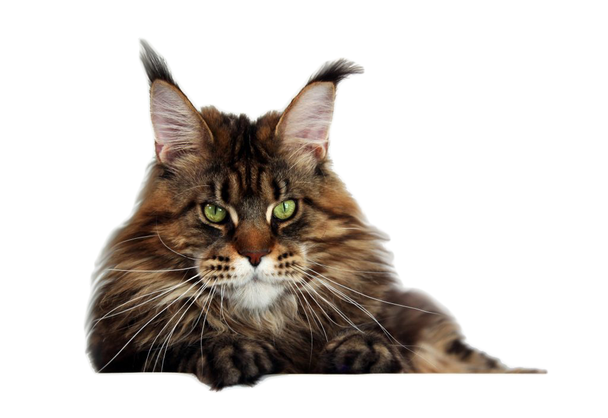

Populāra kaķu šķirne, kas izceļas ar savu lielo augumu un izcilajām medību iemaņām.
Meinkūni ir liela, krāšņa kaķu šķirne, kas viegli izdzīvo skarbā ziemeļu klimatā. Meinkūni ir ļoti lieli kaķi, vieni no lielākajiem mājas kaķiem pasaulē, tādēļ attīstās lēni. Tikai 3—5 gadu vecumā var uzskatīt, ka meinkūns ir pieaudzis. Runči ir lielāki kā kaķenes.
Meinkūniem ir vidēji garš vai garspalvains apspalvojums. Apmatojums ir īsāks uz galvas un pleciem, bet garāks uz vēdera un sāniem. Dažiem kaķiem ir lauvai līdzīga apkakle. Kažoks ir mīksts un zīdains, bet arī ļoti blīvs un nodrošina kaķim aizsardzību aukstumā un mitrumā. Ziemā tas ir biezāks, bet vasarā plānāks.
Meinkūni ir maigi, labsirdīgi giganti un tos mēdz saukt par maigajiem milžiem. Mežonīgs izskats un pārsteidzoši maigs raksturs. Tie ir inteliģenti un tos var viegli apmācīt. Meinkūns ir ļoti uzticīgs savai ģimenei un neuzticas svešiniekiem. Tas labi sadzīvo ar suņiem, citiem kaķiem un bērniem.